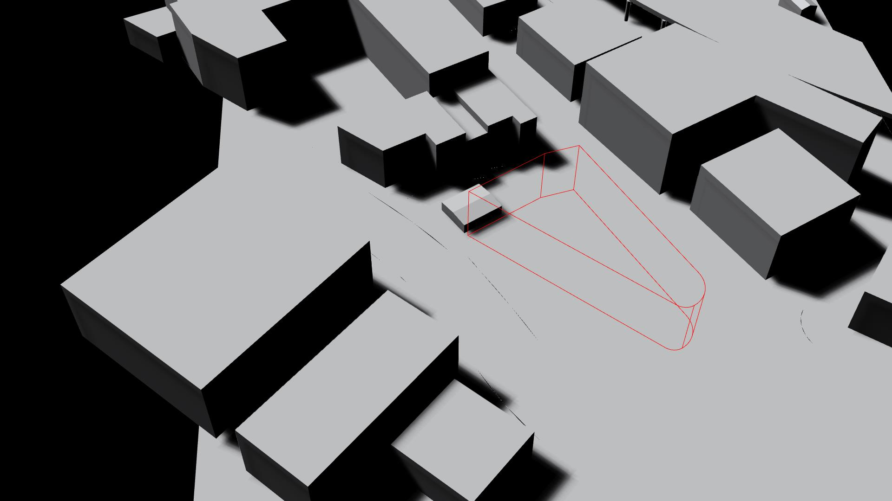
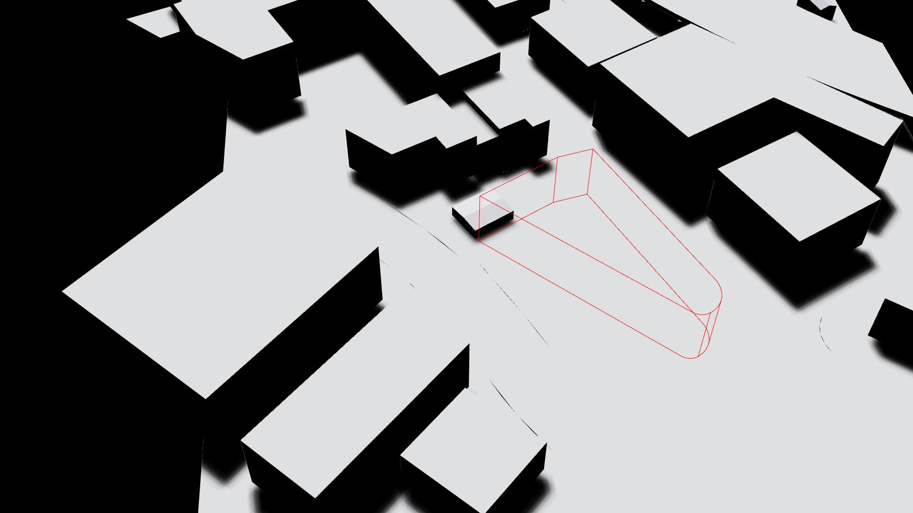
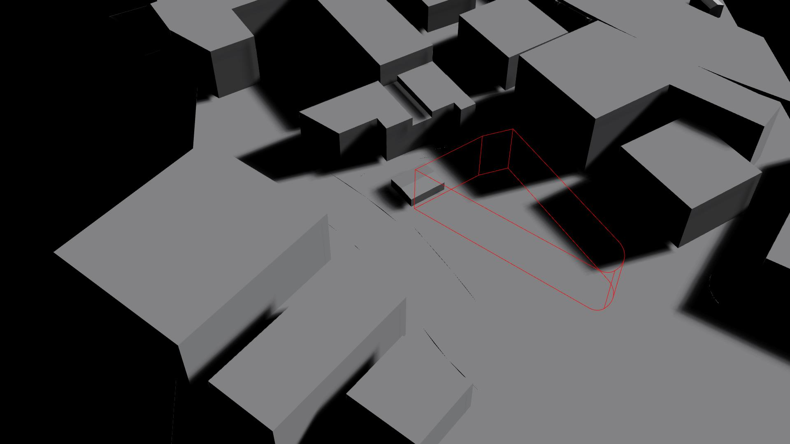

3.23.20
The address for the community center is 810 Meeting Street, selected to be an “anchor” for the existing community in the face of massive housing development projects in the area that threaten it. The site is tucked between state highway 52 and i26, making noise pollution a concern.
The site has some notable neighbors. The International Longshoremen's Association Building is right next door, as well as the Charleston City Recreation Services, making this a very local-friendly corner of the city. Restaurants in the area range from the hyperlocal (see: Martha Lou’s Kitchen, a tiny Southern restaurant classified as "historic") to the very new (see: Butcher + Bee, a hip eatery with a glossy website that boasts locations in both Charleston and Nashville). The establishment immediately adjacent to the site, the Tattooed Moose, is called a local staple in some literature online (despite also being a permanent fixture in various tourist guides). A few churches and religious buildings are scattered around the neighborhood, and a large graveyard stretches behind the International Longshoremen's Association.
This is a covered seating area that I found on an unpopulated pier during my trip to Charleston over last spring break. The use of concrete blocks for the columns is something that I found very unexpected but surprisingly cohesive with the tone and aesthetic of the environment.
This is a dune that is reinforced with concrete blocks as a result of recent erosion in the area. I found both the pattern and circumstance of the blocks to be very intriguing in terms of designing for context. At the moment, I'm unsure of how I could implement this aesthetic in my own project, but it's something to keep in mind.
Here is the specific Google Maps location for the site.
Here is a light analysis of the site based on rhino renderings.
8 am
10 am
12 pm
4 pm
6 pm